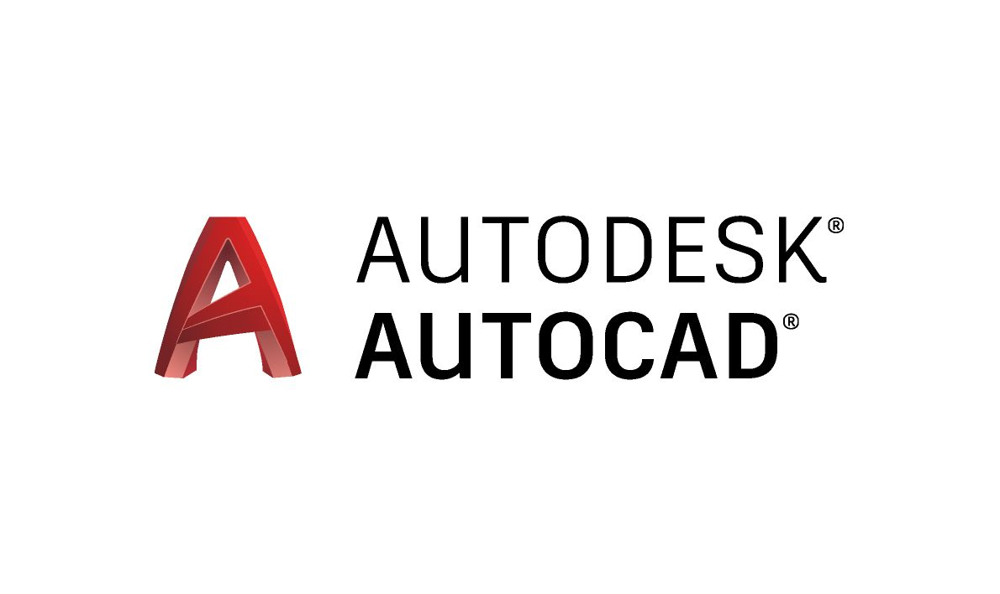

One of the softwares I enjoy working on the most is AutoCAD. AutoCAD is a 3D drafting software application developed through AutoDesk. I have used this software to create 3D images that I have 3D printed. There are all different aspects of this software, for example, generating 2D drawings and 3D models. AutoDesk also includes many different softwares through the company, Inventor, Maya, Fusion and many other softwares. You are able to work on any of these several softwares to get the job done that you want!

Published: October 7
Photoshop is another software that I enjoy working on. I am minoring in Graphic Design, so this software helps me a lot with some of the courses that I am enrolled in. Adobe Photoshop is the best imaging and graphic design software that you are able to photo edit, compositing digital painting and animation. There are so many different elements to this software that you can complete different project with. You are able to use this software from your desktop, iPad any computer. I enjoy working on Photoshop because you are able to play with different colors and effects and edit your work as much as you would like.